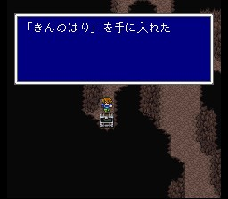
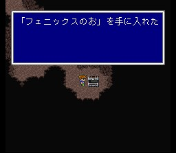

적들은 그리 강하지는 않습니다. 그러나 블록스란 놈은 플래쉬라는 전체
암흑 공격, 코카트리스는 부리라는 석화공격을 행하므로 아이템을 적절히 사용해
주셔야 합니다. 블록스에게 플래쉬를 지금 배워두는 것도 좋겠지요. 좀 성급한 감도
있지만.. 참고로 금바늘을 블록스에게 사용하면 즉사합니다.
보라색 꽃은
독초이니 부딪히지 않도록 조심해서 가세요.

가다보면 타이쿤왕이 흘린 모자(미스릴헬름)를 발견하고, 레나가 마기사에게
중독당합니다. 일행은 위기에 처하지만 재치를 발휘하여 레나를 구해내고, 그녀와
대적합니다.
싸움을 오래 끌면 폴츠야가 나타나는데, 직접공격이
센 놈입니다. 웬만하면 폴츠야가 나타나기 전에 마기사를 없애는 게.. 마기사는 성가신
마법공격을 쓰니, 사이레스로 침묵시켜 버리면 편합니다. 마기사는 에어로를 쓰니
빠뜨렸다면 배워보는 것도..
정상에 도착하면 비룡이 쇠약해져 있는데, 레나는 비룡을 구하기 위해 독초에 부딪히는 것을 감수하고, 비룡은 레나를 치료한 뒤 일행을 태우고 비상합니다. (여기서 밧슈의 뜻밖의 약점이 하나 공개되는군요.)